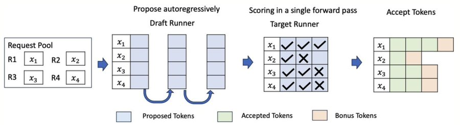
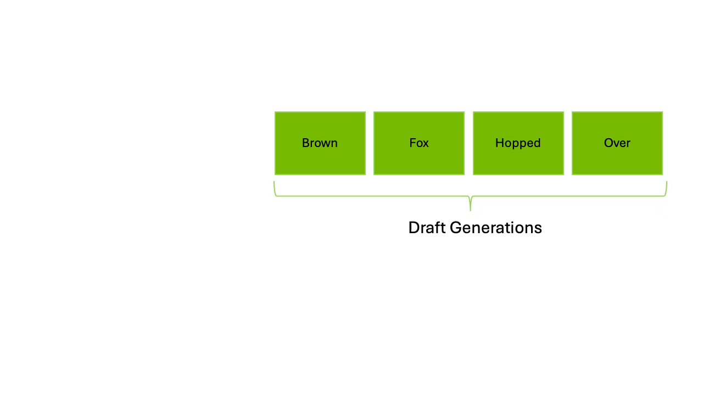
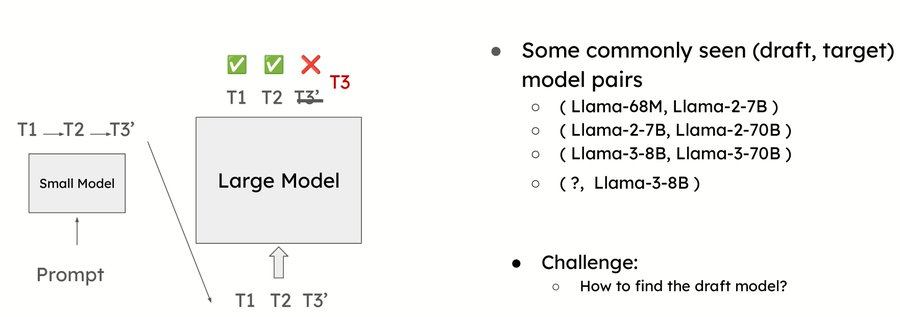
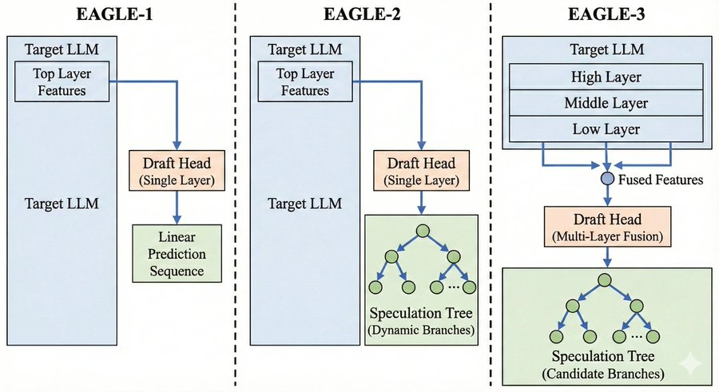
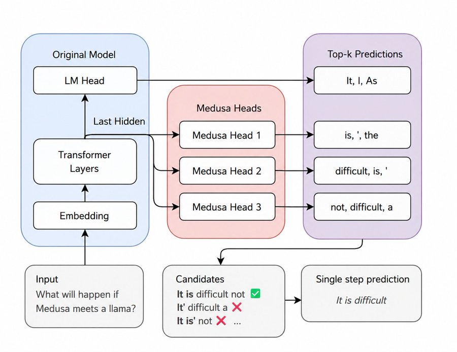
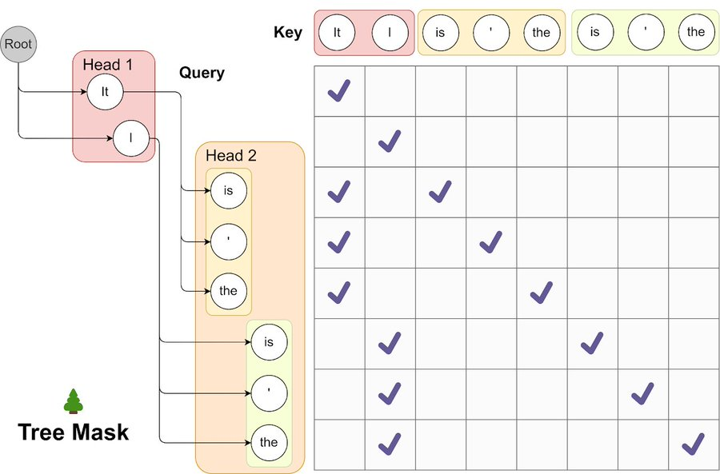
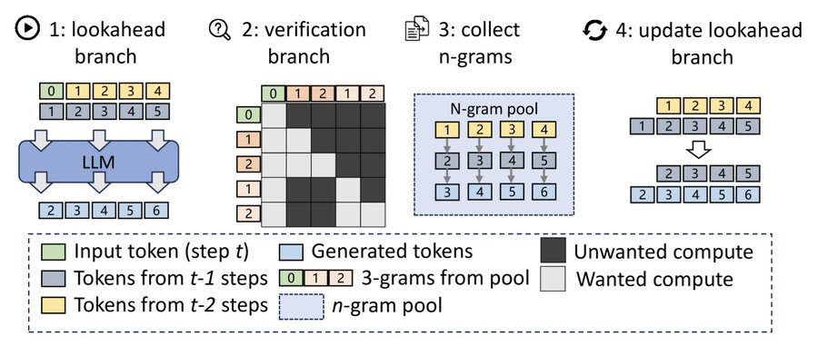
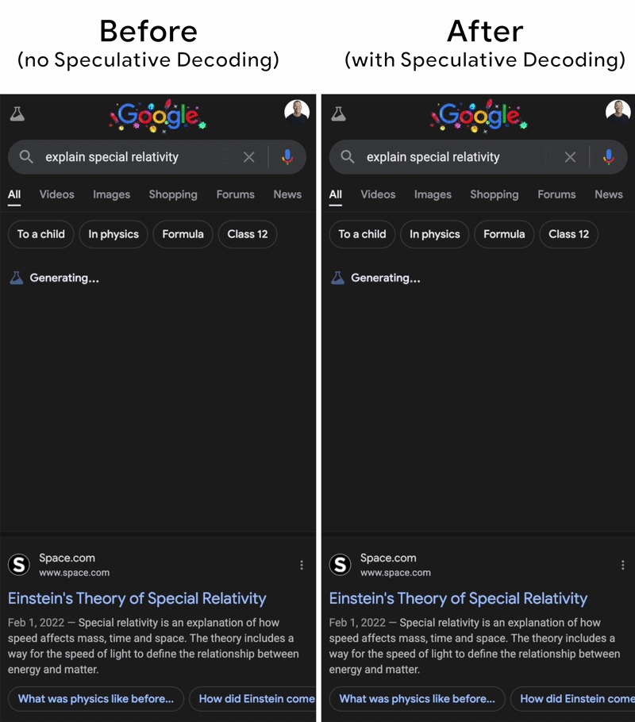

Everything you need to know about Speculative Decoding Inference
what is speculative decoding and why it works?
speculative decoding is a technique that speeds up large language model inference without changing the model itself. the core idea is that we use a small, fast model to guess what the next few tokens might be, then use the large model to check if those guesses are correct in a single forward pass. if the guesses are right, you get multiple tokens for the cost of one verification step. if some are wrong, you still get at least one correct token and the rest are discarded.
the reason this works is that verifying tokens is cheaper than generating them. when you run a normal autoregressive forward pass, the model does a full computation for each token sequentially. but verification is different. the model already knows the full context (all previous tokens plus the draft tokens), so checking whether a draft token is correct is essentially a single matmul and softmax operation, not a full generation step.
think of it like this, instead of writing an essay word by word, you write a rough draft first, then a teacher quickly checks each word against the answer key. the teacher can check many words in one sitting, but you as the student took time writing each word. speculative decoding is the same. the draft model is the student (fast but sometimes wrong), and the target model is the teacher (slow but always correct).
the speedup comes from the fact that the draft model is much smaller and faster than the target model. if you can get even 60 to 70 percent of your draft tokens accepted by the target model, you end up generating more tokens per second than running the target model alone. this is especially effective at batch size one, where you are generating one sequence at a time and the overhead of the draft model is small relative to the target model's cost.

how does the verification step work?
1. draft model proposes K tokens: the draft model generates tokens autoregressively, one at a time, just like a normal language model. it produces K tokens (say 4) based on the current context. these are just guesses. they might be right, they might be wrong.
2. all K tokens are fed to the target model together the target model receives the original prefix plus all K draft tokens as a single sequence. it runs one forward pass over the entire sequence. because transformers process all positions in parallel during prefill, this takes roughly the same time as a single forward pass regardless of how many draft tokens you added.
3. target model compares its own predictions with the draft tokens at each position, the target model checks whether the draft token matches what it would have generated. if the draft token is in the top-1 of the target distribution, it is accepted. if not, it is rejected and everything after it is discarded.
4. the pipeline restarts from the rejection point if tokens 1 and 2 are accepted but token 3 is rejected, you keep tokens 1 and 2 plus the target model's own prediction for position 3. then the draft model starts over from this new position and proposes the next batch of K tokens. you always make forward progress of at least one token per verification step.

draft model selection
the most common approach is to use a smaller model from the same model family as the target. for example, if your target model is Gemma 7B, you use Gemma 2B as the draft. if your target is Llama 3 70B, you use Llama 3 8B as the draft. this works well because models from the same family share similar training data, token distributions, and architectural patterns. the draft model has learned to predict tokens in roughly the same way as the target, so when it guesses, it tends to guess correctly more often.
a larger draft model generally gives higher acceptance rates because it captures more of the target's behavior. but a larger draft model is also slower to run. the sweet spot is usually the smallest model in the family that still achieves 70 to 80 percent acceptance. going below that threshold usually means the draft is too weak and the overhead of running it outweighs the gains.
the tradeoff is simple. a 1B draft on a 7B target might give 65 percent acceptance and 1.5x speedup. a 3B draft on the same 7B target might give 85 percent acceptance and 2.5x speedup. but the 3B draft takes 3x longer to run than the 1B draft. so you are balancing acceptance rate against draft latency. in practice, the smallest model in the same family is a good starting point, and you tune from there based on your specific workload and hardware constraints.

draft model approaches and variants
1. EAGLE
EAGLE is a family of speculative decoding methods that predict hidden states instead of tokens. the key insight is that hidden states contain richer information than token logits, so predicting the target model's next hidden state is easier and more accurate than predicting the next token directly. EAGLE has evolved through three versions, each building on the previous one.
eagle-1: linear prediction EAGLE-1 takes the top layer features from the target model and feeds them into a single-layer draft head that predicts the next hidden state. the draft head autoregressively generates K hidden states, each deriving the next token, producing a single linear sequence of K tokens for the target model to verify. it is simple and lightweight but only proposes one path, so if the draft guesses wrong at position 2, everything after is wasted.
eagle-2: dynamic speculation tree EAGLE-2 keeps the same single-layer draft head but changes the proposal strategy from a single linear sequence to a tree of possible continuations. at each position, the draft head proposes multiple candidate tokens, creating branches that the target model verifies simultaneously in one forward pass. this captures multiple plausible continuations and significantly improves acceptance rates, often reaching 85 to 90 percent, at the cost of slightly longer verification due to more tokens in the tree.
eagle-3: multi-layer feature fusion EAGLE-3 extracts features from the high, middle, and low layers of the target model and fuses them before feeding to the draft head, which is upgraded to a multi-layer fusion architecture. by combining features from different layers, the draft head captures local patterns, semantic relationships, and task-specific representations simultaneously, leading to the highest acceptance rates of the three versions. it also uses tree-based verification from EAGLE-2, making it the most accurate but most complex to deploy.

the downside of EAGLE is that it requires training the draft head on top of a specific target model. you cannot just grab any small model and use it. you need to collect hidden states from the target model, train the draft head on those representations, and then deploy both together. this adds complexity to the deployment pipeline. but the performance gains are significant enough that EAGLE has become one of the most popular approaches in production systems like SGLang.
2. Medusa
Medusa takes yet another approach. instead of a separate draft model, it adds multiple prediction heads directly on top of the existing target model. each head is a small MLP that predicts a different future token position. head 1 predicts token t+1, head 2 predicts token t+2, head 3 predicts token t+3, and so on. all heads share the same backbone (the target model), so you get multiple draft predictions from a single forward pass.
the advantage of Medusa is that you do not need a separate draft model at all. the draft heads are lightweight and add minimal overhead to the target model's forward pass. the target model does its normal computation, and the extra heads produce draft tokens in parallel. this simplifies deployment because you only have one model to serve, not two. the tradeoff is that Medusa heads are less accurate than a full draft model because they are predicting multiple positions ahead from the same representation without autoregressive refinement.

Medusa also supports tree-based verification, where instead of proposing a single linear sequence of K tokens, it proposes a tree of possible continuations. the target model then verifies the entire tree in one forward pass. this can capture cases where multiple continuations are plausible, improving the acceptance rate further. Medusa-2 extended this approach with more sophisticated tree structures and has shown strong results on both language and code tasks.

3. lookahead decoding
Lookahead decoding is the only approach that requires no draft model at all. instead, it exploits a property of language models called n-gram repetition. when a language model generates text, it often repeats phrases or patterns it has seen before in the current sequence. look ahead decoding identifies these repeating n-grams in the KV cache and uses them as draft tokens for future positions.
the way it works is straightforward. as the model generates tokens, look ahead decoding maintains a table of n-grams (sequences of 2, 3, or 4 tokens) that have appeared in the current generation. when it needs to predict the next few tokens, it checks whether any stored n-gram matches the current context. if a match is found, the continuation of that n-gram becomes the draft proposal. the target model then verifies these proposals just like in standard speculative decoding.
the strength of look ahead decoding is that it requires zero additional memory or computation for a draft model. it works entirely from the existing KV cache. the weakness is that it only works when the text contains repetitive patterns. for creative writing or diverse generation where repetition is low, look ahead decoding provides minimal speedup. it works best for code generation, structured output, and tasks where the model frequently reuses patterns from the input context.

4. draft attention variants
the attention mechanism used in the draft model significantly affects performance. in standard speculative decoding, the draft model runs its own full attention over its own KV cache, completely independent of the target model. this means the draft model has to recompute all the attention patterns from scratch, which adds overhead and can lead to different attention distributions than the target.
EAGLE-style draft attention changes this by sharing the target model's hidden states directly with the draft head. instead of the draft model maintaining its own attention, it operates on the target model's representations. this means the draft head "sees" exactly what the target model sees, which leads to much higher acceptance rates. the draft head only needs to learn the small transformation from current hidden state to next hidden state, not the full attention pattern.
the choice between standard draft attention and EAGLE-style draft attention depends on your deployment constraints. standard attention is simpler to implement and works with any draft model. EAGLE-style attention requires training a draft head on a specific target model but delivers better performance. in production systems like SGLang, both options are available, and the choice depends on whether you prioritize simplicity or maximum throughput.
how speculative decoding is used in production
1. production implementations
SGLang, vLLM, and TensorRT-LLM are the three main inference engines that support speculative decoding in production. SGLang offers the most complete implementation with EAGLE, Medusa, and standard draft model support, along with tree-based verification and prefix caching. vLLM supports draft model verification with continuous batching and has recently added EAGLE support. TensorRT-LLM from NVIDIA provides speculative decoding optimized for their GPU hardware with kernel-level fusion. all three share the same core idea but differ in which draft approaches they support and how they optimize the verification pipeline.
2. continuous batching and speculative decoding
continuous batching allows new requests to join an active batch as soon as slots open up, rather than waiting for the entire batch to finish. when combined with speculative decoding, the interaction becomes complex. the scheduler needs to manage draft generation for some requests while others are being verified, and new requests may arrive mid-verification.
SGLang handles this by treating speculative decoding as a sub-step within the continuous batching loop, where each request independently goes through draft and verify phases while the scheduler dynamically adjusts the batch composition. this keeps GPU utilization high while still benefiting from speculative speedup on individual sequences.
3. KV cache pressure
the draft model needs its own KV cache separate from the target model. for a standard draft approach, this means roughly doubling the memory required per sequence during the draft phase. EAGLE-style approaches reduce this overhead because the draft head shares the target model's KV cache and only needs to store its own hidden states. tree-based verification also increases KV cache usage because multiple candidate branches must be stored simultaneously. on memory-constrained GPUs, this additional pressure can limit the maximum batch size or sequence length, which is why careful memory management and cache eviction strategies are critical in production deployments.
conclusion
speculative decoding is one of the most practical ways to speed up LLM inference without changing the model itself. the core idea is that you let a cheap draft model do the guessing and let the expensive target model do the verification. this flips the bottleneck from sequential token generation to parallel verification, which is exactly what transformers are good at.
the field has evolved rapidly from simple draft model approaches to sophisticated methods like EAGLE that predict hidden states and verify using tree-based speculation. each generation brings higher acceptance rates and better hardware utilization. production engines like SGLang and vLLM have made these techniques accessible with minimal configuration, so you do not need to implement the kernels yourself to benefit from them.
speculative decoding works best at low batch sizes, adds memory overhead from the draft model's KV cache, and its effectiveness depends heavily on how well the draft matches the target. it is not a universal speedup. for high-throughput batch serving, other techniques like quantization and continuous batching may give more consistent gains. but for latency-sensitive, single-user scenarios, speculative decoding delivers the kind of wall-clock improvement that users actually feel.
if you are building inference infrastructure, speculative decoding is worth understanding deeply. knowing when it helps, when it does not, and which approach fits your workload is the difference between a 1.2x and a 3x speedup. thanks!
